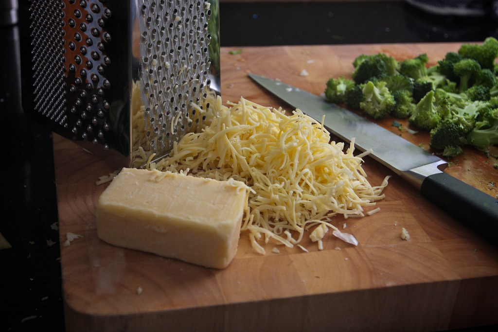

Home
Cheesy Broccoli

Description
Yummy cheesy broccoli side
Ingredients
1 lb broccoli
2 tbsp butter
2 tbsp flour
1 cup milk
3/4 cup shredded cheddar
2 Tbsp grated parmesan
1/4 tsp salt
ground mustard to taste
cayenne to taste
Steps
place the broccoli in a pan with enough water to cover the bottom
high heat until the water starts boiling then cover the pan and simmer for approximately 5 minutes
in another pan add the butter until it melts then sprinkle the flour until golden
slowly add the milk stirring constantly, simmer until it thickens
slowly add the cheddar in until fully melted then add the rest of the ingredients
pour the cheese sauce over the broccoli and enjoy